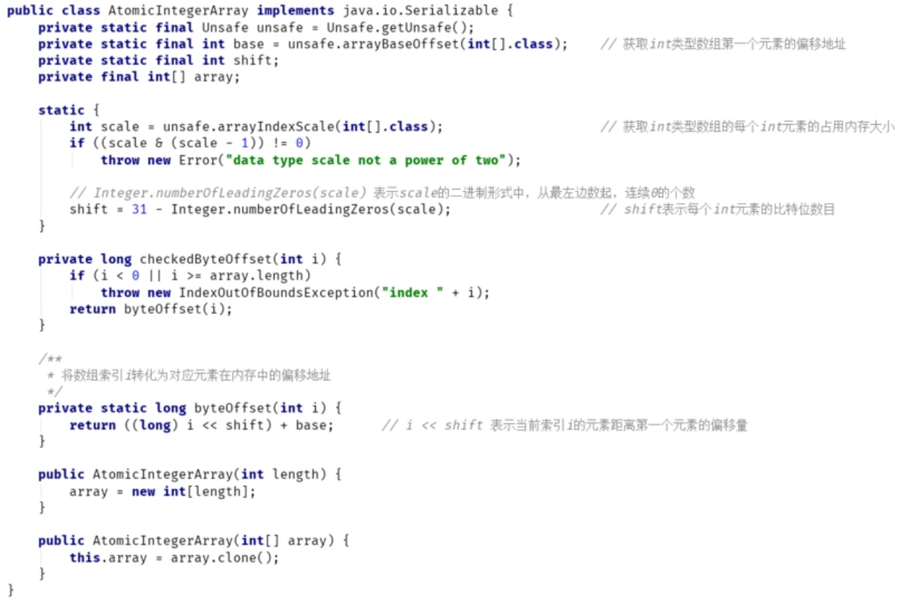
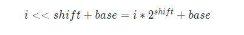
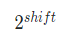
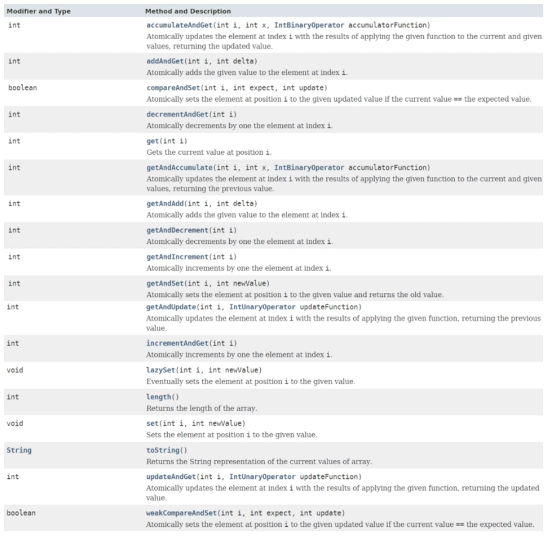

Atomic数组，顾名思义，就是能以原子的方式，操作数组中的元素。
JDK提供了三种类型的原子数组：AtomicIntegerArray、AtomicLongArray、AtomicReferenceArray。
这三种类型大同小异，AtomicIntegerArray对应AtomicInteger，AtomicLongArray对应AtomicLong，AtomicReferenceArray对应AtomicReference。
一、Atomic数组简介
其实阅读源码也可以发现，这些数组原子类与对应的普通原子类相比，只是多了通过索引找到内存中元素地址的操作而已。
注意：原子数组并不是说可以让线程以原子方式一次性地操作数组中所有元素的数组。
而是指对于数组中的每个元素，可以以原子方式进行操作。
说得简单点，原子数组类型其实可以看成原子类型组成的数组。
比如：
AtomicIntegerArray array = new AtomicIntegerArray(10);
array.getAndIncrement(0); // 将第0个元素原子地增加1
等同于
AtomicInteger[] array = new AtomicInteger[10];
array[0].getAndIncrement(); // 将第0个元素原子地增加1
二、AtomicIntegerArray原理
本节将以AtomicIntegerArray为例，介绍下原子数组的原理，AtomicLongArray和AtomicReferenceArray的使用和源码与AtomicIntegerArray大同小异，读者可以自己查看Oracle官方文档和源码。
AtomicIntegerArray其实和其它原子类区别并不大，只不过构造的时候传入的是一个int[]数组，然后底层通过Unsafe类操作数组：

可以看到，AtomicIntegerArray提供了两种构造器，本质都是内部利用array变量保存一个**int[]**数组引用。
另外，AtomicIntegerArray利用Unsafe类直接操作**int[]**对象的内存地址，以达到操作数组元素的目的，几个关键的变量解释如下：
int base = unsafe.arrayBaseOffset(int[].class);
Unsafe类的arraBaseOffset方法：返回指定类型数组的第一个元素地址相对于数组起始地址的偏移值。
int scale = unsafe.arrayIndexScale(int[].class);
Unsafe类的arrayIndexScale方法：返回指定类型数组的元素所占用的字节数。比如int[]数组中的每个int元素占用4个字节，就返回4。
那么，通过base + i * sacle 其实就可以知道 索引i的元素在数组中的内存起始地址。
但是，观察AtomicIntegerArray的byteOffset方法，是通过i << shift + base 的公式计算元素的起始地址的：

这里，其实就等于scale。
shift = 31 - Integer.numberOfLeadingZeros(scale)，Integer.numberOfLeadingZeros(scale)是将scale转换为2进制，然后从左往右数连续0的个数。
读者可以自己计算下：shift = 31 - Integer.numberOfLeadingZeros(4) = 31 - 29 =2
之所以要这么绕一圈，其实是处于性能的考虑，通过移位计算乘法的效率往往更高。
三、AtomicIntegerArray接口声明
